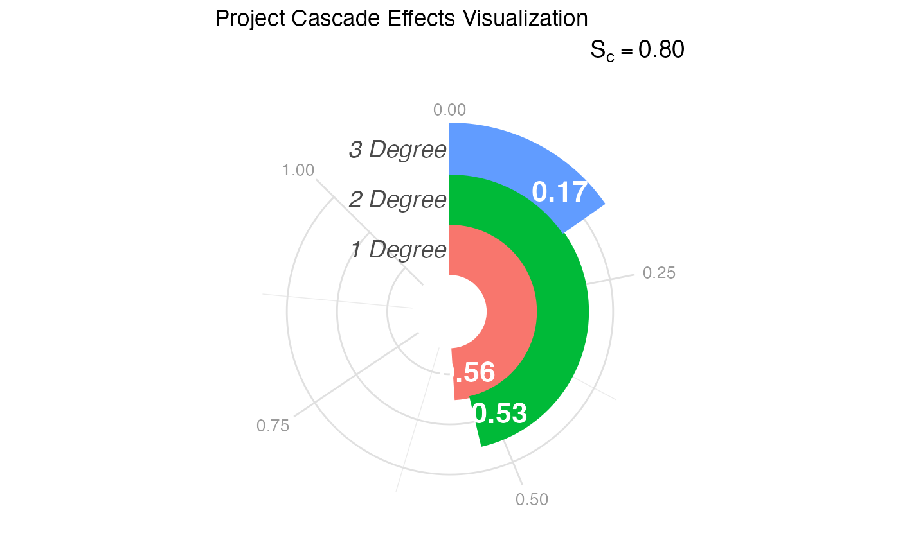

Visualizes the "Cascade" of effects—specifically the reach of the project across different degrees of impact (1st Degree, 2nd Degree, and 3rd Degree)—using a radial bar chart inspired by the sociological infographics of W.E.B. Du Bois.
Usage
visualize_cascade(
analysis_object,
project_title = "Project Cascade Effects Visualization",
score_label_color = "white"
)Details
Historical Context: While often called a "racetrack plot" in modern plotting libraries, this visualization style pays homage to the "City and Rural Population 1890" and other spiral charts created by W.E.B. Du Bois for the 1900 Paris Exposition. Du Bois effectively used wrapped bars to display magnitude within a confined space, allowing for immediate visual comparison of lengths (impact) without the distortions of standard pie charts.
Interpretation: This plot maps the "Ripple Effect" of the project:
Inner Ring (1st Degree: Immediate impact (Direct participants).
Middle Ring (2nd Degree): Intermediate impact (Partners of partners, local community).
Outer Ring (3rd Degree): Distant impact (Policy changes, broader field adoption).
The length of the arc represents the score (0 to 1). A "full" track indicates maximum impact at that level.
References
Du Bois, W. E. B. (1900). The Georgia Negro: A Social Study. (Infographics displayed at the Paris Exposition of 1900). Library of Congress.
Price, J. F. (2024). CEnTR*IMPACT: Community Engaged and Transformative Research – Inclusive Measurement of Projects & Community Transformation. CUMU.
Examples
# 1. Generate and analyze data
data <- generate_cascade_data()
results <- analyze_cascade(data)
# 2. Create the default visualization
p <- visualize_cascade(results)
# 3. Customize the palette using standard ggplot2 grammar
# e.g., p + ggplot2::scale_fill_brewer(palette = "Dark2")
print(p)
